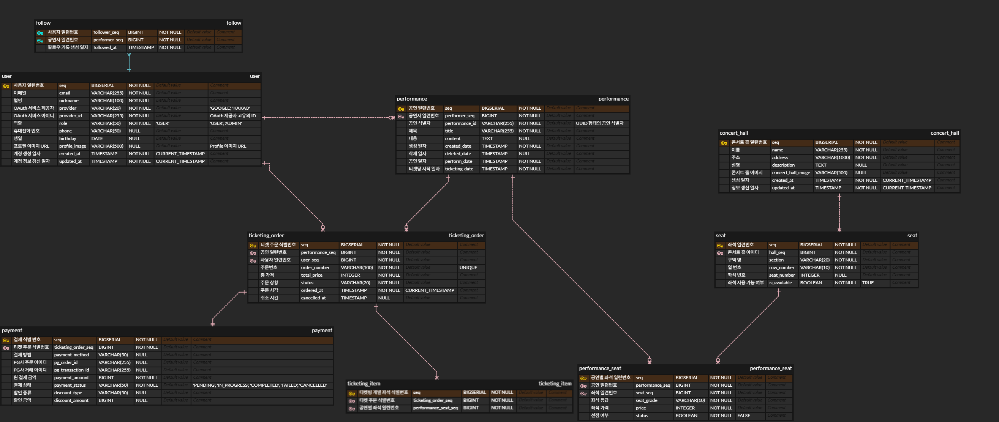

[podoR] 1. 프로젝트 개요 및 DB 설계 하기
서론
- 미루고 미뤄왔던 ‘토이프로젝트를 하나정돈 스스로 해봐야 하지 않을까?‘라는 생각의 실천을 하기 위해, podoR이라는 서비스를 구상했다.
podoR은 영상을 실시간 스트리밍할 수 있는 서비스를 제공하며, 해당 ‘스트리밍의 시청권’ 및 ‘(가상이지만) 실제 공연의 좌석’을 티켓팅할 수 있는 서비스를 제공한다.- 실시간 스트리밍 서비스를 처리하며
FFMpeg의 코덱 처리,RTMP/HLS통신 처리 등의 작업을 처리해보고 싶었고, 티켓팅 서비스를 통해단기간에 집중되는 고밀도의 트래픽을 처리해보는 경험 역시 해보고 싶었기 때문에 이 두가지를 결합한 서비스를 구상했다.
- 실시간 스트리밍 서비스를 처리하며
- 해당 프로젝트에서 다룰 핵심 요소들이 다소 기술적 난도가 있기 때문에, 기술 스택은 비교적 익숙한
React.js와Spring Boot를 사용하기로 했다.- 다만, 그래도 프론트엔드에서도 비교적 새로운걸 사용해 학습하는게 좋을것 같아
Next.js를 사용하기로 했다.
- 다만, 그래도 프론트엔드에서도 비교적 새로운걸 사용해 학습하는게 좋을것 같아
- 추가로, 애초에 서비스 구상을 시작할때부터 서비스를 MSA로 쪼개고, webflux와 같은 비동기적 요소들을 도입하는 방안도 생각했으나, 일단
모놀리식하게 구현하고 이후에 시간이 된다면 이를 쪼개는 쪽으로 가는게 레거시 서비스를 MSA화 하는 추가적인 경험을 할 수 있다 판단해 보류하였다.
대략적인 개발 스텝
- 기능 설계 및
React.js/Next.js를 사용한 화면 개발 Spring서버 구축 및 인증/인가에 필요한 기능 설계, 구현- RTMP/HLS Request/Response 핸들링하는 서버 구현
- RTMP/HLS Request/Response 처리시 인증/인가 정보 사용하도록 확장
- 티켓팅 서비스 구현
Locust등 부하 테스트 진행하며 동시 요청 처리 성능 확장 시키기- 백엔드 서비스들 Microservices로 쪼갠 뒤,
Redis를 통해 인증/인가 정보 공유하도록 확장
서비스 기능
- 대략적으로 서비스 기능들이 무엇이 있을지, 예상되는 서비스 사용자를 기준으로 설계했다.
공통
- 회원가입 / 로그인
- 팔로잉
- 공연 목록 조회
- 공연 정보 조회
공연 주최자 관련
- 콘서트 등록/수정/삭제(CUD)
- 좌석 구매 현황 조회
- 라이브 공연 영상 업로드
공연 소비자 관련
- 공연 좌석 조회
- 공연 좌석 선택
- 공연 티켓 결제
- 구매한 공연 티켓 조회
- 구매한 공연 티켓 환불
- 라이브 공연 영상 요청 (공연 관람)
ERD 설계

- 위에서 구상한 서비스 기능들을 바탕으로, 필요한 ERD를 설계했으며, 다음과 같이 9개의 테이블이 일단은 만들어졌다.
user
| 컬럼명 | 타입 | 제약조건 | 설명 |
|---|---|---|---|
| seq | BIGSERIAL | PK | 일련번호 |
| VARCHAR(255) | NOT NULL, UNIQUE | 이메일 | |
| nickname | VARCHAR(100) | NOT NULL | 닉네임 |
| provider | VARCHAR(20) | NOT NULL | OAuth 제공자 (‘GOOGLE’, ‘KAKAO’) |
| provider_id | VARCHAR(255) | NOT NULL | OAuth 제공자 고유 ID |
| role | VARCHAR(50) | NOT NULL | 역할 (‘USER’, ‘ADMIN’) |
| phone | VARCHAR(50) | NULL | 전화번호 |
| birthday | DATE | NULL | 생년월일 |
| profile_image | VARCHAR(500) | NULL | 프로필 이미지 URL |
| created_at | TIMESTAMP | NOT NULL | 생성일시 |
| updated_at | TIMESTAMP | NOT NULL | 수정일시 |
- 사용자 관련 정보를 담는 테이블로,
email,nickname과 같은 사용자별 정보와create_at,updated_at과 같은 일자 정보들을 담고 있다. - 또한,
podoR서비스에서는Oauth만 사용해서 로그인 및 회원가입을 처리할 예정이므로, OAuth Provider 관련 컬럼인provider,provider_id를 담는다.
follow
| 컬럼명 | 타입 | 제약조건 | 설명 |
|---|---|---|---|
| follower_seq | BIGINT | PK, FK, NOT NULL | 팔로워 일련번호 (User FK) |
| performer_seq | BIGINT | PK, FK, NOT NULL | 공연자 일련번호 (User FK) |
| followed_at | TIMESTAMP | NOT NULL | 팔로우 일시 |
사용자의 팔로우 정보를 담는 테이블로,유저(follower_seq)와팔로우한 공연자(performer_seq)의 일련번호 정보를 담고있다.
performance
| 컬럼명 | 타입 | 제약조건 | 설명 |
|---|---|---|---|
| seq | BIGSERIAL | PK | 일련번호 |
| performer_seq | BIGINT | FK, NOT NULL | 공연자 일련번호 (User FK) |
| performance_id | VARCHAR(255) | UNIQUE, NOT NULL | 공연 ID (UUID) |
| title | VARCHAR(255) | NOT NULL | 제목 |
| content | TEXT | NULL | 내용 |
| created_date | TIMESTAMP | NOT NULL | 생성일시 |
| deleted_date | TIMESTAMP | NULL | 삭제일시 |
| perform_date | TIMESTAMP | NOT NULL | 공연 일시 |
| ticketing_date | TIMESTAMP | NOT NULL | 티켓팅 오픈 일시 |
- 공연 관련 정보를 담는 테이블로,
performer_seq,title,content등 공연 관련 정보와 각 공연을 고유하게 식별하는 UUID인performance_id을 담고있다.
concert_hall
| 컬럼명 | 타입 | 제약조건 | 설명 |
|---|---|---|---|
| seq | BIGSERIAL | PK | 일련번호 |
| name | VARCHAR(255) | NOT NULL | 공연장 이름 |
| address | VARCHAR(1000) | NOT NULL | 주소 |
| description | TEXT | NULL | 설명 |
| concert_hall_image | VARCHAR(500) | NULL | 공연장 이미지 URL |
| created_at | TIMESTAMP | NOT NULL | 생성일시 |
| updated_at | TIMESTAMP | NOT NULL | 수정일시 |
- 각 공연장(콘서트 홀)에 대한 정보를 담는 테이블로,
name,address,description등 공연장의 간단한 정보를 담고있다.
seat
| 컬럼명 | 타입 | 제약조건 | 설명 |
|---|---|---|---|
| seq | BIGSERIAL | PK | 일련번호 |
| hall_seq | BIGINT | FK, NOT NULL | 공연장 일련번호 |
| section | VARCHAR(20) | NOT NULL | 구역 |
| row_number | VARCHAR(10) | NOT NULL | 열 번호 |
| seat_number | INTEGER | NULL | 좌석 번호 |
| is_available | BOOLEAN | NOT NULL | 사용 가능 여부 |
- 각
공연장의 좌석에 대한 정보를 담는 테이블로, 좌석들의구역(section),열번호(row_number),좌석 번호(seat_number)등을 담고있다.
performance_seat
| 컬럼명 | 타입 | 제약조건 | 설명 |
|---|---|---|---|
| seq | BIGSERIAL | PK | 일련번호 |
| performance_seq | BIGINT | FK, NOT NULL | 공연 일련번호 |
| seat_seq | BIGINT | FK, NOT NULL | 좌석 일련번호 |
| seat_grade | VARCHAR(10) | NOT NULL | 좌석 등급 |
| price | INTEGER | NOT NULL | 가격 |
| status | BOOLEAN | NOT NULL | 상태 |
공연별 좌석 정보를 담는 테이블로, 좌석별로 각 공연에 대해 어떠한등급(seat_grade)과가격(price)을 갖는지, 선점되었는지(status) 여부를 담고있다.- 공연별 좌석 정보를 분리한 이유는 같은 공연장의 같은 좌석이라도 공연 별로
좌석 등급별 구획을 나누는 방법이 다르기 때문에 이들을 처리하기 위해 별도 테이블로 분리하였다.
- 공연별 좌석 정보를 분리한 이유는 같은 공연장의 같은 좌석이라도 공연 별로
ticketing_order
| 컬럼명 | 타입 | 제약조건 | 설명 |
|---|---|---|---|
| seq | BIGSERIAL | PK | 일련번호 |
| performance_seq | BIGINT | FK, NOT NULL | 공연 일련번호 |
| user_seq | BIGINT | FK, NOT NULL | 사용자 일련번호 |
| order_number | VARCHAR(100) | UNIQUE, NOT NULL | 주문번호 |
| total_price | INTEGER | NOT NULL | 총 금액 |
| status | VARCHAR(20) | NOT NULL | 상태 |
| ordered_at | TIMESTAMP | NOT NULL | 주문일시 |
| cancelled_at | TIMESTAMP | NULL | 취소일시 |
티켓 주문 내역에 대한 정보를 담는 테이블로,어떤 공연(performance_seq)에누가(user_seq)티켓을 예매한건지,주문 처리 상태(status)는 어떤지,주문 시각(ordered_at)및취소 시각(cancelled_at)은 언젠지 등의 정보를 담고있다.ticketing_order는 바로 아래 설명할ticketing_item을 하나로 아우르기 위한 일종의 부모 테이블이라고 할 수 있다.- 원래는
단일 테이블로 ticketing 내역을 처리하려 했으나, 그렇게 할 경우 시중 서비스들처럼 한 번의 예매에서두 좌석 이상 예매하는게 불가능하기 때문에 두 개의 테이블로 분리하였다.
- 원래는
ticketing_item
| 컬럼명 | 타입 | 제약조건 | 설명 |
|---|---|---|---|
| seq | BIGSERIAL | PK | 일련번호 |
| ticketing_order_seq | BIGINT | FK, NOT NULL | 티켓팅 주문 일련번호 |
| performance_seat_seq | BIGINT | FK, NOT NULL | 공연별 좌석 일련번호 |
티켓 주문 내 상세 정보를 담는 테이블로,한 번의 예매(ticketing_order)에 포함된 각 좌석 예매 내역에 대한 정보를 담고있다.- 따라서
티켓 주문 식별번호(ticketing_order_seq)와공연별 좌석 일련번호(performance_seat_seq)를 갖는다.
payment
| 컬럼명 | 타입 | 제약조건 | 설명 |
|---|---|---|---|
| seq | BIGSERIAL | PK | 일련번호 |
| ticketing_order_seq | BIGINT | FK, NOT NULL | 티켓팅 주문 일련번호 |
| payment_method | VARCHAR(50) | NULL | 결제 수단 |
| pg_order_id | VARCHAR(255) | NULL | PG사 주문 ID |
| pg_transaction_id | VARCHAR(255) | NULL | PG사 거래 ID |
| payment_amount | BIGINT | NOT NULL | 결제 금액 |
| payment_status | VARCHAR(50) | NOT NULL | 결제 상태 (‘PENDING’, ‘IN_PROGRESS’, ‘COMPLETED’, ‘FAILED’, ‘CANCELLED’) |
| discount_type | VARCHAR(50) | NULL | 할인 유형 |
| discount_amount | BIGINT | NULL | 할인 금액 |
결제 내역에 대한 정보를 담는 테이블로,어떤 티켓 주문의 결제 정보인지(ticketing_order_seq),어떤 결제 방법(payment_method)을 사용했는지,결제 상태(payment_status)는 어떤지,할인 관련 정보(discount_type,discount_amount)에 대해서도 담고있다.
이어서
- 이어서 이를 바탕으로, 대응되는 Spring의
JPA Entity를 구현하고, 가장 먼저 소셜 로그인 기능을 구현하고자 한다. - 따라서 그에 필요한 Oauth 서비스 신청 및 API 발급, 화면 설계 및 구현과 백엔드 비즈니스 로직 구현을 진행할 예정이다.